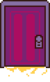

ADD RUNWAY PHOTO
RUNWAY
SHOW / DESIGNER ONE
Add the real credit, date, location, and any context worth knowing.
PATH 02 / MODELING + RUNWAY
* The light changes down this corridor.
* This route holds runway work, photoshoots, editorial images, pageantry, performance, and visual storytelling.
Runway credits can breathe here with the designer, show, date, city, and one strong image from each appearance.
Add the real credit, date, location, and any context worth knowing.
Add another runway appearance with enough image space to actually matter.
This is deliberately image-first. Modeling employers should be able to see the work before they read an essay about it.
Pageantry, performance, campaigns, and creative collaborations can live here as a simple timeline instead of competing with the photos.
Add pageant experience, title, location, or creative responsibilities that strengthen the modeling story.
Add singing, stage work, hosting, or other live performance experience.
Add selected shoots, publications, campaigns, photographers, or creative teams.
SAVE POINT* The last flash fades. You can save here.
Spring Fashion Show
April 2026Runway appearance
March 2026* A shortcut opens behind the stage.

RETURN TO THE UNDERGROUND